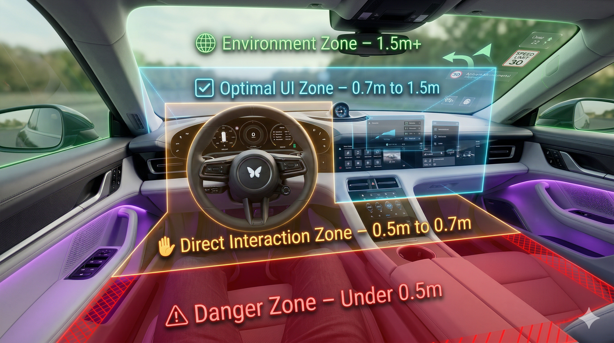

Arrival
Excitement meets technical apprehension.

VR Wall
Occluded VR causes environment disconnect.

The Lost Sale
Overload leads to "I need to think about it."



Interaction Zones
Optimal UI Zone (0.7m to 1.5m) vs. Direct Interaction (0.5m to 0.7m).

Horizontal View
120° Binocular View with 60° Central Focal Area.

Vertical View
Focal optimized 12° degree tilt-down for dashboard ergonomics.